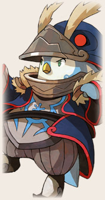
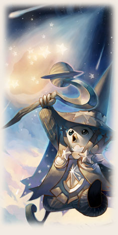
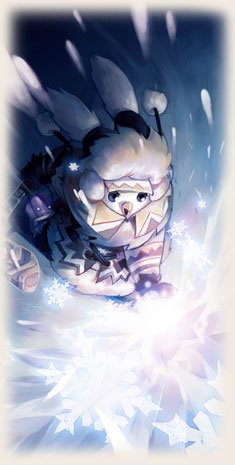

|  | จอมเวทผู้เก่งกาจ ถนัดการสาดเวทโจมตีที่กินวงกว้างและรุนแรง สามารถ ชาร์จ MP ให้ตัวเองและเพื่อนในทีมได้ด้วย หากเพื่อนๆ ชอบการโจมตีด้วยเวท ที่รุนแรง ก็เลือกเล่นเพนกวินนี้แหละครับนอกจากนี้หากเลือกเพนกวินเป็น กองสนับสนุนในทีมของเรา ยังสามารถยืมพลังเพนกวินมาฟื้นคืนพลัง mp และเพิ่มค่าTalชั่วขณะด้วยได้ด้วย |
|||||||||||||||||||||
|
||||||||||||||||||||||


|  | Astral Sage เพนกวินผู้เรียนรู้พลังเวทย์ ควบคุมพลังมานา สามารถเรียกอัสนีบาต จากท้องฟ้ามาโจมตีหากเพื่อนๆ ชอบใช้เวทย์โหดๆ หรือหาตัวทำดามเมจสายเวทย์ แล้วละก็ Astral Sage ก็เป็นทางเลือกที่ดีครับ |
|||||||||||||||||||||||||
|
||||||||||||||||||||||||||


|  | Frost Mage จอมเวทย์สายน้ำแข็ง เพียงสายลมเพียงเล็กน้อยก็สามารถปัดเป่า ความเย็นยะเยือกให้ศัตรูกลายเป็นน้ำแข็งได้ จุดเด่นของ Frost Mage อยู่ที่สกิลต่างๆ ที่สามารถทำให้ศัตรูติดสถานะน้ำแข็งได้ เหมาะกับการใช้การต่อสู้ที่ใช้เวลานาน หรือ PvP ก็ไม่เลวครับ |
|||||||||||||||||||||||||
|
||||||||||||||||||||||||||